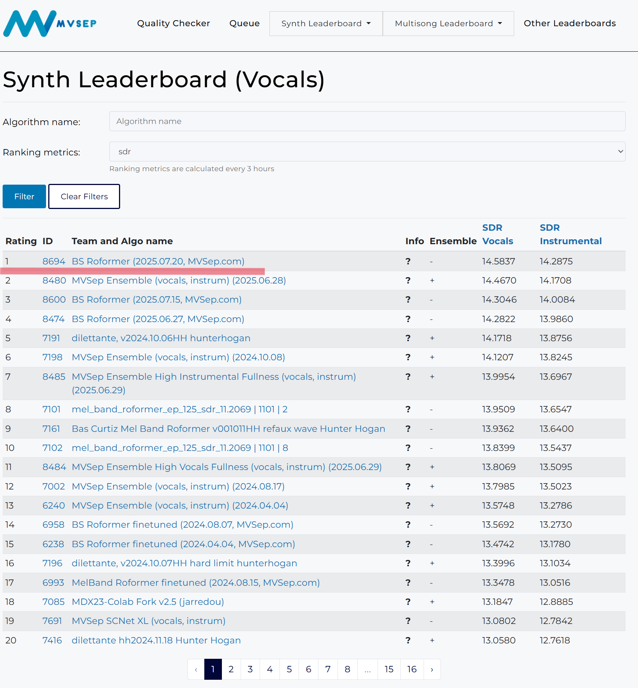
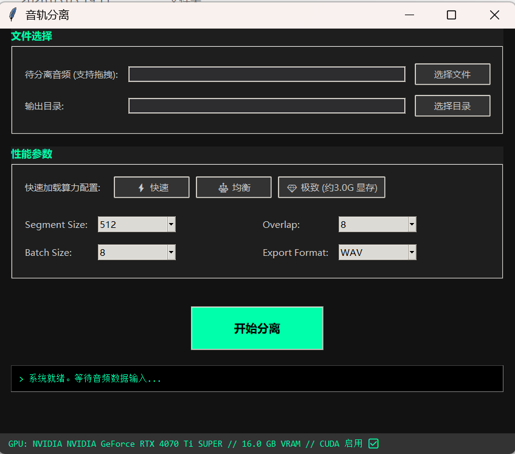

Band-Split RoPE Transformer: 音频分离领域的 SOTA 巅峰
它由字节跳动 AI Lab 提出，因其长期霸榜而闻名。相比 Demucs 或 BSRNN 提升巨大。相较业内老牌方案如iZotope RX 11，效果有质的飞跃，还能充分利用现代GPU加速。
通过 Multi-band Mask Estimation 还原原始频谱；后续更有 Mel-Band 对感知维度的优化以及 v2 版本的参数规模提升，更好的利用现代硬件的性能。
在 MUSDB18-HQ 与 MDX23 挑战赛中霸占榜一，相比 Demucs 或 BSRNN 提升巨大。


[ 极致性能释放 ] 全面支持 N 卡加速运行 (推荐 GTX 700 系及以上架构) | 兼容纯 CPU 解算
请佩戴耳机聆听
同一段人声二次分离结果即时切换，请佩戴耳机聆听
多轨分离，以大幅提升 YourMT3+ 最强的准确率，提升九成以上扒谱效率
由伦敦玛丽女王大学研发的最新顶级开源项目 YourMT3+。
在处理复杂混合音轨、多乐器识别方面已达业内顶级水平。
支持 128 种全谱系 GM 乐器以及人声。
YourMT3+ 在处理原始多轨音源时，精确率会大幅下降至30%左右。
结合本工具，预分离音源后，可使单轨精确率达到 90%
以上。你只需要调整不到10%的音符，即可完成扒谱工作。
* 欲体验 YourMT3+ 请查阅 GitHub：mimbres/YourMT3
* 算力及代理限制用户可前往 HuggingFace Spaces 在线试用：https://huggingface.co/spaces/mimbres/YourMT3
▶ 运行期间如有 BUG 报错或环境冲突，请带上截图于评论区反馈。